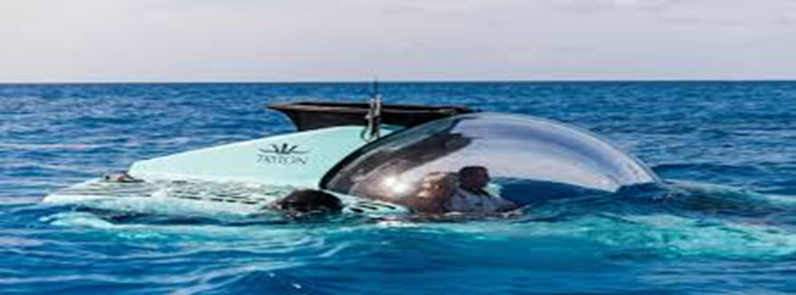
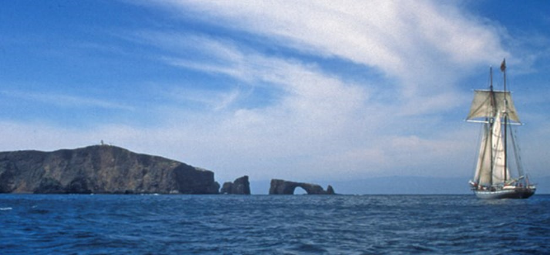
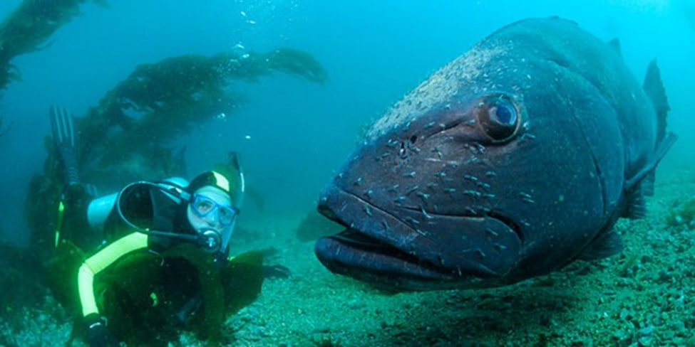
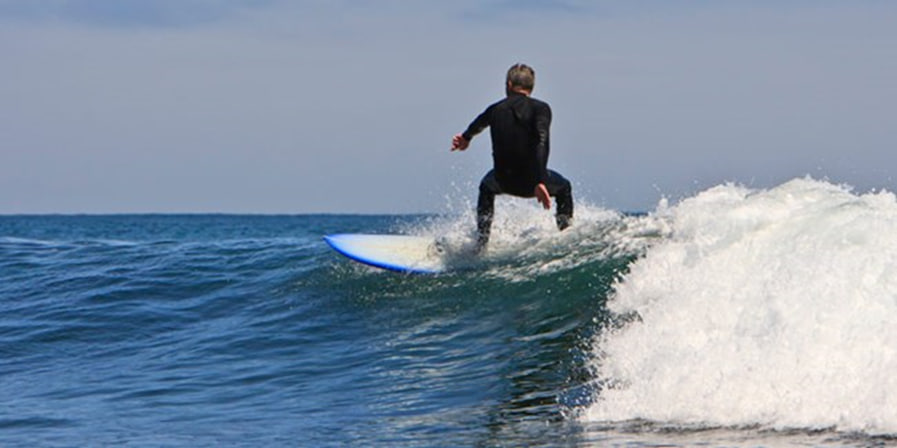
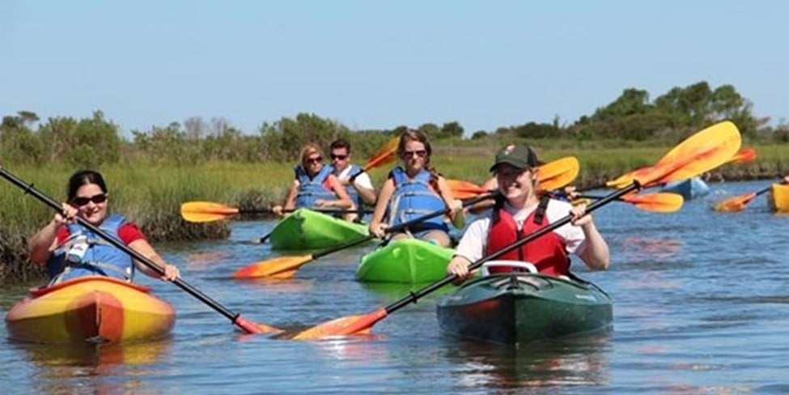
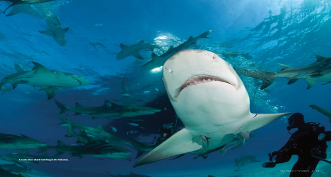

Recreation

The recreation
Beaches provide a variety of recreational options, including swimming, surfing, fishing, strolling, and simply relaxing by the water. Earlier research that valued beach usage believed that going to the beach was a uniform activity. Using a trip cost modelling technique, we estimate the non-market value of beach usage by inhabitants of New South Wales, Australia, in this study. Unlike past research, we create the model based on the activities that most beach visitors do, and we allow for numerous activities to occur. We discover that different uses of the beach generate varying degrees of consumer surplus.
Surfing, fishing, and swimming produce a greater consumer surplus than more passive activities such as just enjoying the natural environment. In addition, we discover that Sydney residents have different values than non-Sydney inhabitants. According to our findings, a trip to the beach generates a basic level of consumer surplus of roughly $10 each trip for Sydney residents, with extra advantages acquired by participating in other activities. Surfing followed by a walk down the beach, for example, adds $17 to the value of the vacation. Understanding the pattern of use is therefore critical for determining beach use value.
The following are some ocean activities that demonstrate the significance of the ocean:-
1-Boating
Boating is a popular recreational activity that provides a unique maritime experience, but it also has hazards and duties. Boaters must be cautious of changing tides, currents, and weather conditions due to the ocean's dynamic environment. Boat pollution may impact marine life and ecosystems, therefore being responsible is essential. Despite these obstacles, boating is a safe and fun sport that allows people to connect with nature and appreciate the beauty of the water.
2-Diving
Diving in the ocean is a popular leisure activity that allows you to explore the underwater world and see a variety of marine creatures. To guarantee safety, however, adequate training, certification, and equipment expertise are required. Divers must also be mindful of environmental elements such as currents, tides, and weather conditions, which can have an effect on their safety and pleasure. Negative effects on the ocean and ecosystems must be avoided, and responsible diving practices must be followed. Despite these obstacles, diving provides an unforgettable and awe-inspiring experience.
3-Watersports
The ocean is a popular water sports location, with activities such as surfing, paddleboarding, jet skiing, and snorkeling available. Surfing entails surfing waves on specially made boards, whereas paddleboarding entails traversing water with a paddle. Jet skiing is a fast-paced water activity that requires skill and prudence. Snorkeling is a casual underwater pastime that allows people to explore the underwater environment without requiring substantial expertise. However, it is critical to prioritize safety and environmental stewardship. To have a good experience, participants should be aware of the weather conditions, dress appropriately, and adhere to responsible behavior standards.
4-Paddle Sports
Paddleboarding is a popular water sport that may be done both on and off the beach. Participants navigate the water by standing on a large board and paddling. Water paddleboarding is a one-of-a-kind experience since it allows individuals to surf waves and explore diverse coastal regions. Balance and competence are essential to operate the board and paddle efficiently. For people at various skill levels, ocean paddleboarding can be an interesting and exciting activity.
5-Wildlife Watching
During the 1990s, increasing access to locations such as coral reefs and polar icecaps resulted in a significant shift in popular perception of marine life. Interest in marine megafauna such as sharks, whales, dolphins, and turtles has grown, with 600,000 people spending over $300 million each year to see sharks, creating 10,000 jobs worldwide. An estimated population of 100 sharks in Palau generates $18 million in shark diving revenue each year, supporting 10,000 jobs globally. These figures are especially startling in locations like Palau, where an estimated 100 shark population produces $18 million in shark diving revenue per year.
Conclusion
The value of marine biodiversity for pleasure and leisure is an economically significant feature in a rapidly developing economic sector with 898 million arrivals in 2007 and a global annual growth rate of over 5%. In some cases, the connection between tourism and marine biodiversity is obvious: coral reefs are home to more than 40% of the world's known marine fishes2, making them a diving and snorkeling paradise. "The business case for biodiversity conservation is most easily made when the business in question depends directly on biodiversity to operate and survive," according to Bishop and his co-authors. Conservation-based tourism is an excellent example of a business whose success is directly connected to the health of the surrounding ecosystem. As a result, tourism is one of the few economic activities that directly absorbs biodiversity demand.